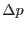
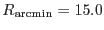

The limits on attitude wander are defined via the parameter maxdelta, which is in arcseconds. The RA limit is set to
where is the average declination value (the exact meaning of `average' in this context is discussed in section 3.3 below). The declination limit is just set to maxdelta, and the position angle (apos) limit  is set to
where  is the nominal radius of the field of view of the XMM EPIC cameras.